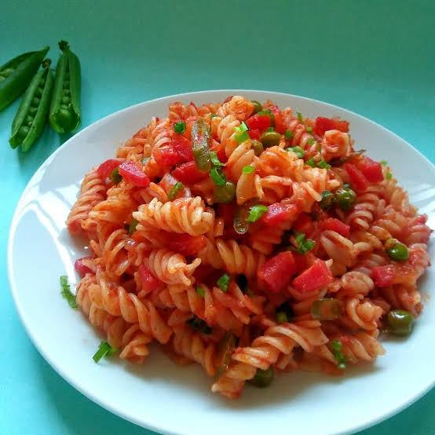

Masala Pasta
Home

Recipe Ingredients
- 1.5 to 2 cups of penne or macaroni
- : 1 medium onion (finely chopped), 2 medium tomatoes (chopped or pureed), 5 cloves garlic (minced), and 1 green chili (optional)
- 1/2 cup mixed vegetables (carrots, peas, capsicum, or sweet corn)
- 2 tablespoons oil or butter
- 1/2 tsp cumin seeds, 1/2 tsp Kashmiri red chili powder, 1/4 to 1/2 tsp turmeric, 1/2 tsp garam masala, salt to taste, and 1 tsp dried Italian herbs or oregano
- • 1–2 tsp tomato ketchup or red chili sauce (optional)
- Fresh coriander leaves
Steps
- Boil the Pasta
- Sauté the Aromatics
- Cook the Vegetables and Tomatoes
- Make the Masala Sauce
- Combine and Toss
- Garnish and Serve
Masala pasta is ready to serve